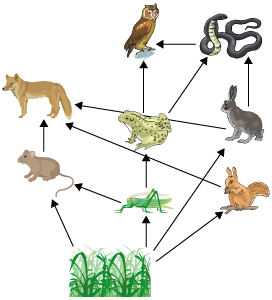

Question:1
Write two examples for the following.
| 1. |
Trees that give us timber |
.................... |
.................... |
| 2. |
Plants that give us medicines |
.................... |
.................... |
| 3. |
Plants that give us essential oils |
.................... |
.................... |
| 4. |
Things made from plant resins |
.................... |
.................... |
| 5. |
Things made from cane |
.................... |
.................... |
Solution:
- Teak , rosewood
- Amla, eucalyptus
- Lemon grass, vanilla
- Varnish, Paint
- Furniture, walking sticks
Question:2
Write one word for the following
| 1. |
The physical features of a place |
.................... |
| 2. |
The uppermost layer of branches in a forest |
.................... |
| 3. |
The layer form which trees branch off from the tree trunk |
.................... |
| 4. |
The shaded layer of a forest where low light is available |
.................... |
| 5. |
Large-scale felling of trees |
.................... |
Solution:
- Topography
- Canopy
- Crown
- Understorey
- Deforestation
Question:3
The type of trees and animals thriving in a forest depends on
(a) climate of a place
(b) topography of place
(c) soil type of a place
(d) all of these
Solution:
(d) All of these
The type of trees and animals thriving in a forest depend on climate, topography and soil of a place.
Question:4
Forests have been cleared for
(a) agriculture
(b) industry and housing
(c) construction of roads
(d) all of these
Solution:
(d) All of these
Forests have been cleared for agriculture, industry and housing and in construction of roads.
Question:5
Trees that act as windbreakers are
(a) coconut and palm
(b) teak and sal
(c) mango and coconut
(d) jackfruit
Solution:
(a) Coconut and palm
Coconut and palm trees act as windbreakers against storms or strong tidal waves.
Question:6
Plants that gives us medicine are
(a) vanilla and mango
(b) amla
(c) neem and eucalyptus
(d) both b and c
Solution:
(d) both b and c
Plants such as amla, neem and Eucalyptus are used in producing various Ayurvedic medicines.
Question:7
Forests can be conserved by
(a) afforestation
(b) planned cultivation
(c) preventing illegal logging
(d) all of these
Solution:
(d) all of these
Forests can be conserved by afforestation, planned cultivation and by preventing illegal logging.
Question:8
What are the three layers of a forest?
Solution:
The forests can be divided into three layers based on the height of the plants and trees. They are
- Canopy
- Crown
- Understorey
Question:9
How do forests play a role in our lives?
Solution:
Forests play a very important role in our lives. Besides providing us with the basic things such as food, clothing and shelter, they also play a vital role in controlling the climate of a place, in regulating air and water, in preventing floods and soil erosion and acting as windbreakers against storms and tides.
Question:10
What is a biotic community?
Solution:
Biotic community or biota is a community comprising of various types of plants, animals and microorganisms which are interdependent and inhabit in a certain area.
Question:11
Differentiate between consumers and producers.
Solution:
| Producers |
Consumers |
| Producers are the organisms that can produce food on their own. |
Consumers are the organisms that cannot produce food on their own. |
| Example: Green plants produce food on their own. |
Example: Animals depend on plants and other animals for food as they cannot produce food on their own. |
Question:12
What does a food chain represent?
Solution:
A food chain represents the flow of energy in nature.
Question:13
Differentiate between deforestation and afforestation.
Solution:
| Deforestation |
Afforestation |
| Cutting down of trees on a large scale is called deforestation. |
Planting of trees on a large scale on land is called afforestation. |
| Deforestation results in the complete destruction of forests resources. |
Afforestation helps in renewing and conserving the forest resources. |
Question:14
Explain how we depend on forests, directly or indirectly.
Solution:
Mankind depends on forest either directly or indirectly for many things. Besides providing us with basic needs such as food, clothing and shelter, forests touch our lives in several other ways.
- Most of the timber based industries rely on trees for the production of paper, plywood, pulp and cardboard.
- Several trees in the forest are used to produce ayurvedic medicines, essential oils, spices, nuts and oil. Resins, bamboo and latex which serve as raw materials to produce several things such as varnish, rubber, furniture, paper.
- Forests help in regulating the climate of a place and also help in increasing the rainfall by raising the water vapour content of the atmosphere.
- Forests help in preventing floods and soil erosion
- Few trees in the forest act as windbreakers against storms and strong tides.
Question:15
With the help of an example, explain a food chain that exists in nature.
Solution:
Food chain exists everywhere representing the flow of energy in nature. All food chains begin with producers of food which are green plants and end with consumers which are animals. A simple food chain could start with a rat feeding on grains. This rat is eaten by a snake. The snake in turn is eaten by an owl. This is a simple chain which shows the flow of energy from one organism to the other in order to live.
Grains Rat Snake Owl
Question:16
Explain a food web.
Solution:
A food web is a system of interconnected food chains. It is a complex network of energy flow from one organism to the other in a single ecosystem. Consider a rabbit and a mouse (see the representation below): Both the animals feed on green plants. A wild cat can eat both these animals. This cat can be eaten by a lion. This complex energy flow which appears just like a spider web is called a food web or food cycle. A frog that feeds on grasshopper can be eaten by an owl or a snake. Snake can also eat rabbit.
A tropical food web is shown in the image:

Question:17
How do forests help in purifying the air?
Solution:
Forests are home to various plants and animals. Plants and animals take in air to survive. Plants make food through a process called photosynthesis by absorbing in atmospheric carbon dioxide and releasing huge amounts of water vapour and oxygen as by-products. Moreover, forests also soak in large amounts of carbon dioxide released by animals and plants during respiration, during volcanic eruptions and also by burning coal and petroleum. This way forests help in purifying the air by maintaining the right levels of carbon dioxide and oxygen in the atmosphere.
Question:18
What is deforestation? Explain all the effects of deforestation.
Solution:
Felling of trees on a large scale is called Deforestation. Deforestation results in complete destruction of forest resources. Effects of deforestation:
- Clearing of forests drastically changes the global climate. Many biological species will become extinct due to sudden change in climate.
- It may cause global warming by increasing the amount of green house gases in the atmosphere.
- With the felling of trees, we will be deprived of many natural resources such as medicinal plants, oils, timber and food.
- Deforestation also leads to soil erosion, excess flooding and landslides. This causes a severe damage to the life around.
Question:19
Explain some of the measures that could be followed to conserve our forests.
Solution:
Following are the measures which help in conserving the forests:
- Afforestation: Planting of trees on a large scale in places where there were no forests initially.
- Planned cultivation: Forests should not be completely cleared for agricultural purposes.
- Prevention of illegal logging: Indian government has laid out rules to punish anyone under law who involves in illegal cutting down of trees.
- Preventing overgrazing: Sufficient pastures should be provided for the cattle in the areas adjoining the forest so that trampling and overgrazing of growing plants by the cattle can be avoided.
- Protection from forest fires: Careful measures should be taken while burning debris so that animal and plant life in the nearby regions are not harmed.